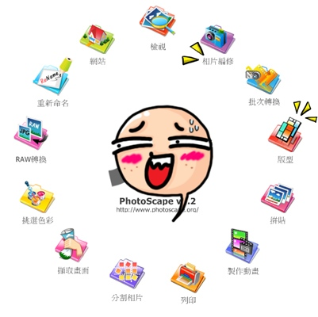
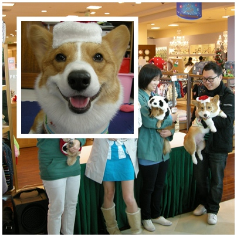
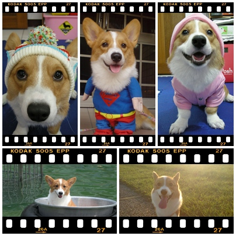
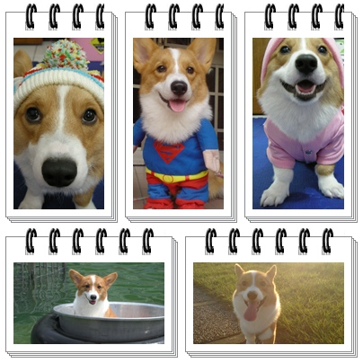

麻麻從"好問題姐姐"那看到的分享資訊!!
麻麻從"好問題姐姐"那看到的分享資訊!!
立刻下載了來試玩一下 修圖軟體
下載儲存後直接安裝就可以了! 很簡單~也沒有毒! 可以放心使用~

安裝完打開的畫面就是長這樣! (中間那張賤臉圖是我放的啦!  )
)

其實它就是一個可以很簡單操作的修圖工具!
把圖丟進去 點相片編修 下方可以調整相片的亮度色彩，
旁邊的裝飾功能>>有很多可愛的插圖可以使用!! 
就像我上圖插入的一個欠扁臉的圖!

或者可以點版型或拼貼~去選擇你喜歡的版型做變化 有很多不同外框套入
有很多不同外框套入
這是我隨便亂抓摩卡卡的照片瞎放的~ 沒有做什嘛特別設計 (鬼才看不出來!
沒有做什嘛特別設計 (鬼才看不出來!  )
)


我覺得用的習慣~應該還不錯吧!! 尤其要常常整理大量的出遊照片的人
放進去做簡單快速的修圖..快多啦! 
我目前是對那些裝飾的小插圖很有興趣~ 因為自己根本也畫不出那嘛可愛的圖!
因為自己根本也畫不出那嘛可愛的圖!
有興趣的快下載來試試啦!  GO.....
GO.....